射击游戏（Shooting game），简称为STG。游戏类型的一种，也是动作游戏的一种。
射击游戏带有很明显的动作游戏特点，也没有纯然的射击游戏，因为射击必须要经过一种动作方式来呈现它的“射击”。所以不论是用枪械、飞机，只要是进行“射击动作”的游戏都可以称之为射击游戏。 为了和一般动作游戏区分，只有强调利用“射击”途径才能完成目标的游戏才会被成为射击游戏。
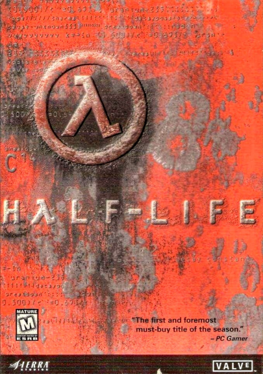第一人称射击类游戏，FPS(First-person shooting game)，严格来说第一人称射击游戏属于动作游戏的一个分支，但和RTS类游戏一样，由于其在世界上的迅速风靡，使之发展成了一个单独的类型。 FPS(First-person Shooting game)第一人称视角射击游戏顾名思义就是以玩家的主观视角来进行射击游戏。 玩家们不再像别的游戏一样操纵屏幕中的虚拟人物来进行游戏，而是身临其境的体验游戏带来的视觉冲击，这就大大增强了游戏的主动性和真实感。 早期第一人称类游戏所带给玩家的一般都是的屏幕光线的刺激，简单快捷的游戏节奏。随着游戏硬件的逐步完善，以及各种游戏的不断结合。 第一人称射击类游戏提供了更加丰富的剧情以及精美的画面和生动的音效。
游戏发展了这么多年，在技术上，和画面上也得到很大的进步，从最早的简陋粗糙画面，一直发展到现在以假乱真的水平，但是在这个过程中，出现了很多经典作品，那么下面十款作品，都是被公认最经典的射击游戏
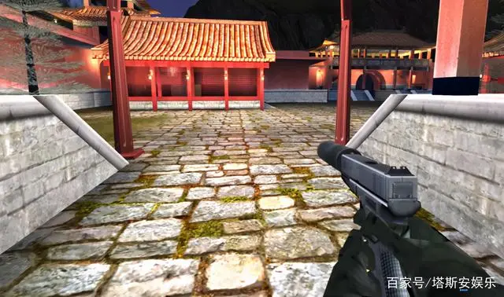《秘密潜入》 主打潜入射击的谍战游戏。 难度很高，还有解密元素，任何关卡不是很容易就能进去了。 在其中可以使用装有消音器的枪械，悄悄地干掉敌人，或者使用匕首近战干掉敌人。 除了单人模式，还有多人线上对战模式，玩法就像《反恐精英》。 游戏的画质放到现在已经过时，但经典依旧存在。
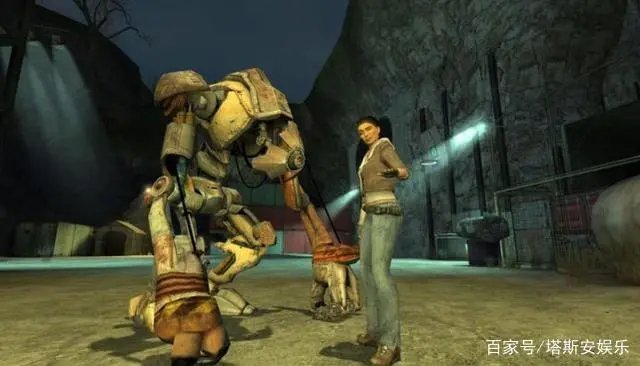《半条命2》 与《反恐精英》同系列的第一人称射击游戏。 但它采用科幻题材并且附带剧情战役。 里面还有较高的挑战性，还能体验各种风格的科幻枪械，人物角色也让玩家记忆深刻。 玩法丰富，还有独特的额外元素，并不像《反恐精英》那样只追求多人竞技。 在十几年前，这款作品就是当时的超级大作，然而现在是经典的回忆。
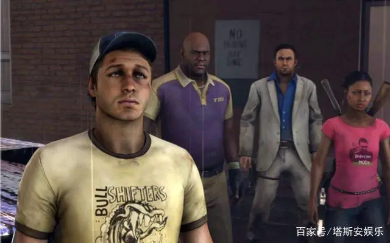《求生之路2》 当年最成功的第一人称，僵尸题材射击游戏。 虽然放到现在画面已经十分落后，但依旧有很多老玩家愿意重回经典。 玩法简单，但有很强的恐怖元素，时不时会突然出现怪物抓住玩家，丧尸们还会模仿人类看电视或隐藏。 有的时候还会出现一大群僵尸攻击玩家。 目前这款游戏依旧可以在steam平台，或国内各大对战平台上体验，它的经典，永远不会被忘记。
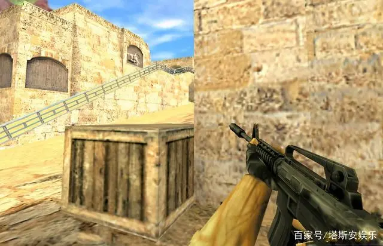《反恐精英1.5》 它是大部分第一人称射击网游的鼻祖，也是当年网吧爆满的热门游戏。 虽然它看起来简单，但是里面的玩法和内容却很有魅力。 正版并不支持Bot机器人，完全是一款多人对战游戏。 但无论哪个版本，我们在当时玩得都很开心，到现在也非常怀念。 而且现在这款游戏也可以体验。
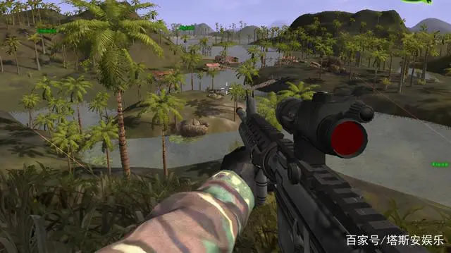《三角洲特种部队》 在当时可玩性最强的一款，特种部队题材第一人称射击游戏。 里面的内容很丰富，每一个关卡都非常有特色，包括直升机作战，吉普车作战，地面作战等。 玩家还可以体验十几种现代化枪械，同时可以自定义配件。 虽然画面简陋，但老玩家依旧怀念，而且这个系列目前已经绝版，不再有续作。
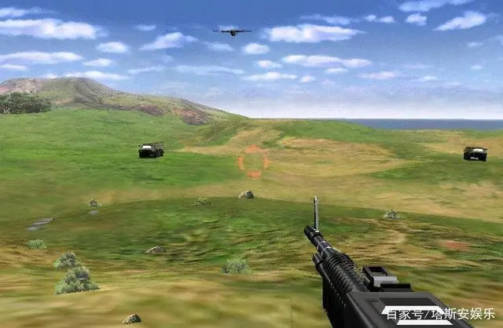《抢滩登陆战》 一款能让当时玩家简单而又快乐的射击游戏。 玩法简单，只专注塔防，控制机枪大炮，防御前进的敌人，同时会出现直升机和装甲车等。 画面简单，素材模糊，但十几年前也就只有这样的技术。 游戏解压后只有20MB大小，基本任何的电脑都可以满足。 别看它不起眼，但在当年为不少90后带来快乐。
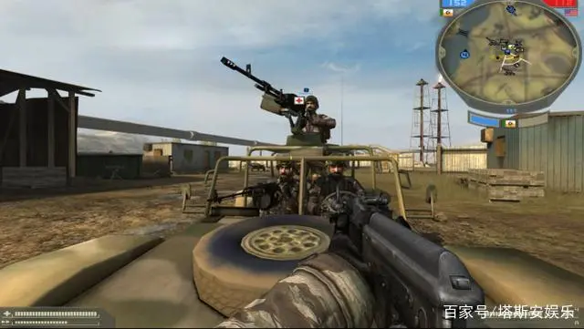《战地2》 20年前玩法最新颖的战争题材，第一人称射击游戏。 在一张大地图上可以自由移动射击，还能开飞机，开坦克，开装甲车，这样的玩法在当时可是非常少见。 所以为这款游戏着迷的玩家不在少数。 作为《战地》系列作品，在任何年代画质都会处于领先状态。 现在这款游戏的资源已经很难找了。
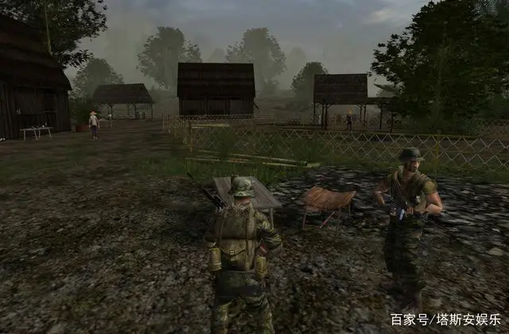《重返狼穴3：悍马攻击》 一款既能开车射击，既能步行射击的第三人称战术游戏。 战斗玩法采用开放性，默认的情况下，玩家驾驶带机枪的悍马战车前进闯关，遇到窄小的地方，需要玩家下车徒步前进。 完全主打快节奏，里面还包含了6到7种不同型号的武装车辆。 还支持局域网联机冲锋闯关，玩起来更刺激。 零00对于这款游戏不太了解，它是90后和95后的经典游戏。
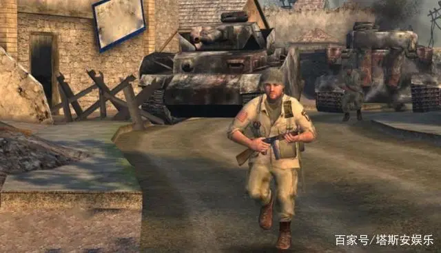《使命召唤2》 早期《使命召唤》系列中，最让人印象深刻的一款续作。 采用二战题材玩法真实，还有很多的电影情节。 游戏的画面对比第一代进步更大。 至于它的经典程度，玩过的人都是有目共睹的。 在这代作品中就支持多人在线对战，竞技性和节奏感很强，依旧让人怀念。
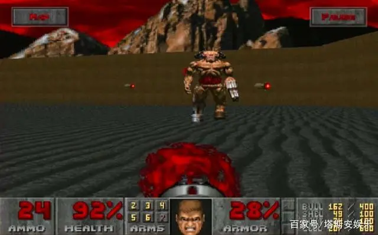《毁灭战士1》 它是最老的PC端，第一人称射击游戏。 它诞生的时间要比《反恐精英》早很多，而是在1987年。 游戏并没有呈现3D，而是像素风格，玩起来就像是红白机上的画面。但是玩起来一样很有意思
点击返回首页